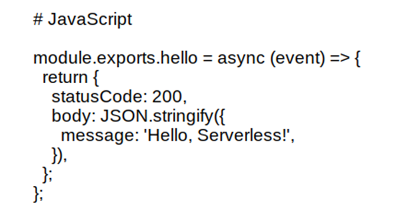

Arquitetura Serverless
Arquitetura Serverless: Como Simplificar o Desenvolvimento e Escalar Aplicações.

Desenvolvedor Java Sênior na Develcode
11 de agosto de 2024
1. Introdução:
A tecnologia serverless representa uma revolução na computação em nuvem, permitindo que os desenvolvedores se concentrem exclusivamente na lógica de negócios, enquanto a infraestrutura subjacente é gerenciada automaticamente pelo provedor de serviços. Este modelo de execução elimina a necessidade de provisionamento e gerenciamento de servidores, oferecendo escalabilidade automática, eficiência de custos e simplicidade operacional. Desde sua introdução, a arquitetura serverless evoluiu significativamente, com plataformas como AWS Lambda, Google Cloud Functions e Azure Functions liderando essa transformação. Este artigo explora os principais aspectos da tecnologia serverless, incluindo suas vantagens e desafios, principais provedores de serviços, casos de uso comuns, componentes e arquitetura, desenvolvimento e implementação, segurança, monitoramento e tendências futuras. Além disso, apresenta estudos de caso reais, como o da Netflix, que demonstram os benefícios tangíveis da adoção de uma arquitetura serverless.
2. Introdução ao Serverless:
A computação serverless é um modelo de execução em nuvem onde o provedor de serviços gerencia automaticamente a infraestrutura necessária para executar o código, permitindo que os desenvolvedores se concentrem apenas na lógica da aplicação. Nesse modelo, os recursos são alocados dinamicamente e cobrados com base no uso real, eliminando a necessidade de provisionamento e gerenciamento de servidores. A arquitetura serverless é altamente escalável, eficiente em termos de custo e ideal para aplicações que exigem alta disponibilidade e resposta rápida a eventos, como processamento de dados em tempo real e backend para aplicações móveis e web.
A arquitetura serverless evoluiu significativamente desde sua introdução, impulsionada pela necessidade de simplificar o desenvolvimento e a operação de aplicações na nuvem. Inicialmente, os desenvolvedores precisavam gerenciar servidores físicos ou virtuais, o que demandava tempo e recursos. Com o advento da computação em nuvem, surgiram plataformas como AWS Lambda, Google Cloud Functions e Azure Functions, que automatizaram o provisionamento e a escalabilidade de recursos. Essa evolução permitiu que os desenvolvedores se concentrassem exclusivamente na lógica de negócios, enquanto os provedores de nuvem cuidavam da infraestrutura subjacente. A arquitetura serverless continua a se expandir, incorporando novas funcionalidades e melhorando a eficiência, tornando-se uma escolha popular para aplicações modernas que exigem alta disponibilidade e escalabilidade dinâmica.
3. Vantagens e Desvantagens:
A tecnologia serverless oferece várias vantagens significativas, incluindo escalabilidade automática, onde os recursos são ajustados dinamicamente com base na demanda, garantindo desempenho consistente sem intervenção manual. Além disso, a cobrança é baseada no uso real, o que pode resultar em uma redução substancial de custos, especialmente para aplicações com cargas de trabalho variáveis. A simplicidade operacional é outro benefício crucial, pois elimina a necessidade de gerenciar servidores e infraestrutura, permitindo que os desenvolvedores se concentrem exclusivamente na lógica de negócios e na inovação, acelerando o tempo de desenvolvimento e implantação de aplicações.
Apesar das vantagens, a tecnologia serverless apresenta alguns desafios notáveis. A latência pode ser um problema, especialmente em aplicações que exigem respostas em tempo real, devido ao tempo necessário para inicializar funções inativas (cold start). A dependência de fornecedores (vendor lock-in) é outra preocupação, pois migrar aplicações entre diferentes provedores de nuvem pode ser complexo e custoso. Além disso, há limitações de execução, como restrições de tempo e recursos alocados para cada função, o que pode não ser adequado para todas as cargas de trabalho. Esses desafios exigem uma análise cuidadosa ao adotar uma arquitetura serverless para garantir que ela atenda às necessidades específicas da aplicação.
4. Principais Provedores de Serviços:
AWS Lambda é pioneiro no modelo de Function as a Service (FaaS) e oferece uma ampla gama de integrações com outros serviços da AWS, além de suportar várias linguagens de programação como Python, Node.js, Java, e mais. Google Cloud Functions se destaca pela facilidade de integração com os serviços do Google Cloud e suporte a linguagens como JavaScript, Python e Go. Azure Functions oferece flexibilidade com diferentes planos de hospedagem e suporte a linguagens como C#, JavaScript e Python, além de integração nativa com o ecossistema Microsoft. Cada provedor tem suas vantagens específicas, e a escolha ideal depende das necessidades e do ambiente de desenvolvimento da aplicação.
5. Casos de Uso Comuns:
Um caso de uso comum para a tecnologia serverless no processamento de dados em tempo real é a análise de streams de dados. Por exemplo, uma aplicação de monitoramento de redes sociais pode usar AWS Lambda para processar tweets em tempo real. Quando um novo tweet é publicado, ele aciona uma função Lambda que analisa o conteúdo, extrai informações relevantes e armazena os resultados em um banco de dados ou serviço de análise. Esse modelo permite que a aplicação escale automaticamente com o volume de tweets, garantindo que os dados sejam processados rapidamente sem a necessidade de gerenciar servidores ou infraestrutura complexa.
Um outro caso de uso comum para a tecnologia serverless em aplicações backend para móveis e web é a criação de APIs RESTful. Por exemplo, uma aplicação de e-commerce pode usar Azure Functions para gerenciar operações como criação de pedidos, consulta de produtos e autenticação de usuários. Cada endpoint da API aciona uma função específica que executa a lógica necessária e interage com um banco de dados ou outros serviços. Esse modelo permite que a aplicação escale automaticamente com o número de usuários e transações, garantindo alta disponibilidade e desempenho sem a necessidade de gerenciar servidores ou infraestrutura complexa.
Outro caso de uso comum para a tecnologia serverless em tarefas de automação e integração é a sincronização de dados entre diferentes sistemas. Por exemplo, uma empresa pode usar Google Cloud Functions para automatizar a transferência de dados entre um sistema de CRM e uma plataforma de marketing. Quando um novo cliente é adicionado ao CRM, uma função é acionada para capturar os dados do cliente e enviá-los automaticamente para a plataforma de marketing, garantindo que ambas as bases de dados estejam sempre atualizadas. Esse modelo permite que a empresa automatize processos repetitivos e integre sistemas de forma eficiente, sem a necessidade de gerenciar servidores ou infraestrutura complexa.
6. Componentes e Arquitetura:
Na arquitetura serverless, os principais componentes incluem Funções como Serviço (FaaS), Backend como Serviço (BaaS), eventos e gatilhos. FaaS permite que os desenvolvedores escrevam e implantem pequenas unidades de código que são executadas em resposta a eventos específicos, como requisições HTTP ou alterações em um banco de dados. Essas funções são gerenciadas pelo provedor de nuvem, que cuida do provisionamento, escalabilidade e manutenção da infraestrutura. A arquitetura serverless é composta por essas funções que interagem com outros serviços e recursos, formando um sistema altamente modular e escalável, ideal para aplicações que exigem resposta rápida e eficiente a eventos.
Temos também o backend como serviço (BaaS) é um modelo de serviço em nuvem que fornece aos desenvolvedores uma série de funcionalidades backend prontas para uso, como autenticação de usuários, gerenciamento de banco de dados, armazenamento de arquivos e notificações push. Em vez de construir e gerenciar a infraestrutura backend do zero, os desenvolvedores podem integrar esses serviços diretamente em suas aplicações, economizando tempo e recursos. BaaS facilita a criação de aplicações móveis e web, permitindo que os desenvolvedores se concentrem na lógica de negócios e na experiência do usuário, enquanto o provedor de BaaS cuida da escalabilidade, segurança e manutenção da infraestrutura.
Em uma arquitetura serverless, eventos são ações ou ocorrências que desencadeiam a execução de funções, enquanto gatilhos são os mecanismos que detectam esses eventos e iniciam as funções correspondentes. Por exemplo, um evento pode ser uma requisição HTTP, uma mensagem em uma fila, ou uma alteração em um banco de dados. O gatilho associado detecta esse evento e aciona a função serverless apropriada para processá-lo. Essa abordagem permite que as aplicações respondam de forma eficiente e automática a uma ampla variedade de eventos, sem a necessidade de intervenção manual ou gerenciamento de infraestrutura.
7. Desenvolvimento e Implementação:
O desenvolvimento e a implementação de aplicações serverless envolvem a escrita de funções que respondem a eventos específicos e a configuração da infraestrutura necessária. Algumas ferramentas e frameworks populares ajudam a simplificar esse processo. O Serverless Framework permite definir, configurar e implantar funções serverless em vários provedores de nuvem usando um arquivo de configuração simples. O AWS Serverless Application Model (AWS SAM) é um framework open-source que facilita a construção e a execução de aplicações serverless na AWS, utilizando templates simplificados para definir a infraestrutura como código. Outras ferramentas incluem o Google Cloud Functions Framework e o Azure Functions, que oferecem suporte a várias linguagens de programação e integração com seus respectivos ecossistemas de nuvem. Essas ferramentas ajudam a acelerar o desenvolvimento, garantir boas práticas e facilitar a manutenção das aplicações serverless.
Aqui estão algumas boas práticas de desenvolvimento para aplicações serverless:
- Funções Pequenas e Modulares: Escreva funções que realizem tarefas específicas e limitadas, facilitando a manutenção e a escalabilidade.
- Gerenciamento de Dependências: Minimize as dependências externas para reduzir o tempo de inicialização e a complexidade.
- Segurança: Aplique o princípio do menor privilégio, garantindo que cada função tenha apenas as permissões necessárias para executar suas tarefas.
- Monitoramento e Logging: Implemente ferramentas de monitoramento e logging para rastrear o desempenho e diagnosticar problemas rapidamente.
- Teste e Automação: Utilize testes automatizados e pipelines de CI/CD para garantir a qualidade e a consistência do código.
- Gerenciamento de Estado: Evite armazenar estado em funções; use serviços de armazenamento externos para gerenciar dados persistentes.
Essas práticas ajudam a garantir que suas aplicações serverless sejam eficientes, seguras e fáceis de gerenciar.
Um exemplo popular de código e tutorial para começar com serverless é a criação de uma função simples usando o Serverless Framework. Aqui está um exemplo básico em Node.js:

Exemplo de código node.js dentro de um serviço serverless.
Para implementar essa função, você pode seguir um tutorial como o da DevMedia, que explica como configurar o ambiente, escrever a função e implantá-la na nuvem. Esse tutorial é ótimo para iniciantes e cobre os conceitos fundamentais de serverless, além de fornecer exemplos práticos para ajudar você a começar rapidamente.
8. Segurança em Ambientes Serverless:
A segurança em ambientes serverless envolve práticas específicas para proteger aplicações e dados. É essencial aplicar o princípio do menor privilégio, garantindo que cada função tenha apenas as permissões necessárias. Avaliar a segurança de pacotes de terceiros e criptografar dados sensíveis são medidas cruciais para prevenir exposições. Implementar sistemas robustos de registros e monitoramento ajuda a detectar e responder rapidamente a incidentes de segurança. Além disso, proteger chaves de acesso e credenciais de login, e resguardar-se contra-ataques como SQL Injection, XSS e DDoS, são práticas recomendadas para manter a integridade e a segurança das aplicações serverless.
O gerenciamento de permissões e autenticação em ambientes serverless é crucial para garantir a segurança e o controle de acesso. Utilizando serviços como AWS Identity and Access Management (IAM), Google Cloud Identity, e Azure Active Directory, é possível definir políticas detalhadas que determinam quem pode acessar quais recursos e em que condições. Essas políticas aplicam o princípio do menor privilégio, garantindo que cada função e usuário tenha apenas as permissões necessárias para realizar suas tarefas. A autenticação pode ser gerenciada através de métodos como OAuth, JWT, e integração com provedores de identidade, assegurando que apenas usuários autorizados possam acessar a aplicação e seus dados.
9. Monitoramento e Depuração:
O monitoramento e a depuração em ambientes serverless são essenciais para garantir o desempenho e a confiabilidade das aplicações. Ferramentas como Amazon CloudWatch, Google Cloud Monitoring e Azure Monitor oferecem recursos avançados de coleta de métricas, logs e rastreamento de desempenho. Além disso, soluções especializadas como Epsagon, Thundra e Dashbird fornecem visibilidade detalhada das funções serverless, identificando gargalos e problemas de desempenho. Essas ferramentas ajudam a detectar e resolver problemas rapidamente, garantindo que as aplicações serverless operem de forma eficiente e segura. Uma técnica eficaz de depuração é o uso do AWS SAM CLI, que permite testar e depurar funções localmente. Com essa ferramenta, você pode executar funções em modo de depuração, anexar um depurador e percorrer o código linha por linha, verificando valores de variáveis e identificando problemas, semelhante ao processo de depuração de aplicações tradicionais. Isso facilita a identificação e correção de erros antes da implantação na nuvem.
10. Tendências Futuras:
Uma tendência futura significativa na tecnologia serverless é a integração com a computação de borda (edge computing). Essa inovação permite que funções serverless sejam executadas mais próximas dos usuários finais, reduzindo a latência e melhorando o desempenho para aplicações que exigem respostas rápidas, como IoT e processamento de dados em tempo real. A combinação de serverless com edge computing promete trazer maior eficiência e escalabilidade, permitindo que as aplicações aproveitem o melhor dos dois mundos: a flexibilidade da nuvem e a proximidade do processamento local.
A computação serverless está moldando o futuro da TI ao permitir que desenvolvedores criem e escalem aplicações de forma mais ágil e econômica. Com a eliminação da necessidade de gerenciar infraestrutura, as equipes podem se concentrar na inovação e na entrega rápida de funcionalidades. A tendência de integrar serverless com computação de borda (edge computing) promete reduzir ainda mais a latência e melhorar o desempenho das aplicações. Além disso, a adoção crescente de serverless está impulsionando a criação de novos padrões de arquitetura e ferramentas de desenvolvimento, tornando a TI mais eficiente e adaptável às demandas dinâmicas do mercado.
11. Estudos de Caso e Exemplos Reais:
Um exemplo notável de sucesso na adoção de serverless é o Netflix. A empresa utiliza a arquitetura serverless para processar bilhões de eventos por dia, gerenciando tarefas como transcodificação de vídeos, monitoramento de desempenho e personalização de conteúdo. Com o uso de AWS Lambda, o Netflix consegue escalar automaticamente suas operações para atender à demanda global, garantindo alta disponibilidade e eficiência. Essa abordagem permite que a equipe de desenvolvimento se concentre na inovação e na melhoria contínua da experiência do usuário, sem se preocupar com a gestão de infraestrutura.
A adoção de serverless pela Netflix resultou em vários benefícios significativos. A empresa conseguiu escalar suas operações de forma automática para atender à demanda global, processando bilhões de eventos diários com alta eficiência. Isso permitiu uma redução de custos operacionais e uma maior agilidade no desenvolvimento e implantação de novas funcionalidades. Além disso, a utilização de AWS Lambda para tarefas como transcodificação de vídeos e monitoramento de segurança melhorou a confiabilidade e a segurança dos serviços, proporcionando uma experiência de usuário mais consistente e de alta qualidade.
12. Conclusão:
A tecnologia serverless tem se mostrado uma revolução na computação em nuvem, oferecendo uma abordagem inovadora que permite aos desenvolvedores focarem na lógica de negócios sem se preocupar com a gestão de infraestrutura. Com vantagens como escalabilidade automática, redução de custos e simplicidade operacional, a adoção de serverless está crescendo rapidamente. No entanto, é importante considerar os desafios, como latência e dependência de fornecedores, para garantir que essa arquitetura atenda às necessidades específicas de cada aplicação.
Os principais provedores de serviços, como AWS Lambda, Google Cloud Functions e Azure Functions, oferecem soluções robustas e flexíveis que suportam uma ampla gama de casos de uso, desde processamento de dados em tempo real até backend para aplicações móveis e web. A evolução contínua da arquitetura serverless, incluindo a integração com computação de borda, promete trazer ainda mais eficiência e escalabilidade.
Estudos de caso, como o da Netflix, demonstram os benefícios tangíveis da adoção de serverless, incluindo a capacidade de escalar operações automaticamente e reduzir custos operacionais. Com práticas recomendadas de desenvolvimento, segurança e monitoramento, as aplicações serverless podem operar de forma eficiente e segura, proporcionando uma experiência de usuário de alta qualidade.
Em resumo, a tecnologia serverless está moldando o futuro da TI, permitindo que as equipes de desenvolvimento inovem e entreguem funcionalidades rapidamente, adaptando-se às demandas dinâmicas do mercado. À medida que a adoção de serverless continua a crescer, espera-se que novas inovações e melhorias continuem a emergir, solidificando ainda mais sua posição como uma escolha popular para aplicações modernas.